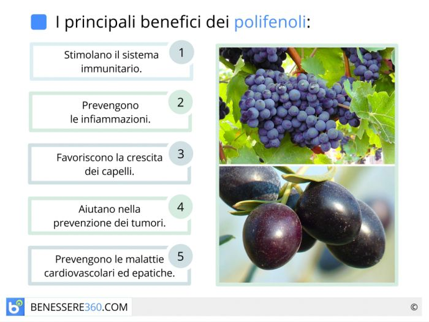
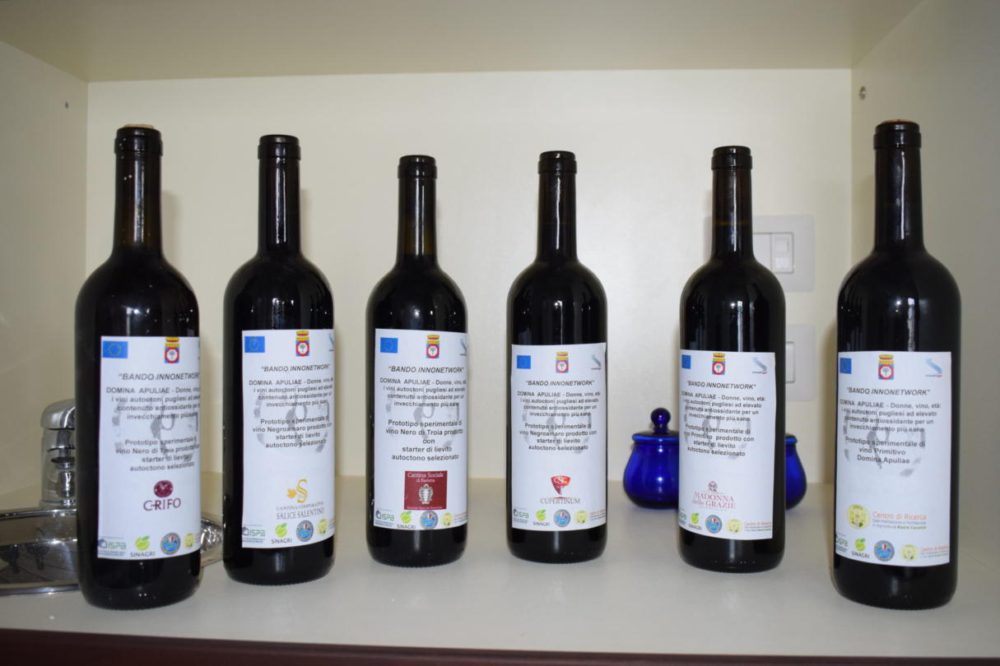

EFFETTI DELL'ALCOL SUL NOSTRO CORPO
Un mito (solo in parte sfatato) a cui molte persone credono ancora oggi è che il vino rosso può avere effetti positivi sui vasi sanguigni e sulla pressione sanguigna. Si dice che I polifenoli nel vino rosso, provenienti dai semi e dalla buccia dell'uva, sono responsabili di questi benefici. Dopo aver bevuto un bicchiere di vino rosso, si è osservato un aumento del diametro dell'arteria. Analizzando diversi vini rossi e bianchi il vino italiano Umbro ha mostrato il contenuto più alto di polifenoli, con 737 milligrammi. Nonostante questi studi non è ancora stato confermato tutto cio poiche si dice anche che i livelli necessari per ottenere benefici sono troppo alti rispetto a quelli presenti nel vino. Concludendo questo non si può definire un vero e proprio miti riguardante l'alcol ma si spera che nei prossimi anni verranno fatti nuovi studi a riguardo per capire realmente la verità sui polifenoli.
Un altro mito comune è che la birra è meno dannosa degli alcolici forti. Falso perchè l’effetto sul corpo dipende dalla quantità totale di alcol consumata, non dalla bevanda. Bere molta birra può avere gli stessi effetti negativi del consumo di alcolici più forti.
 